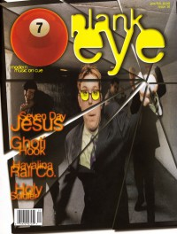

CMnexus
: Contemporary Christian culture, music, and media.
|
7ballJan / Feb 1998, #16
| Cover |
|---|
|  | | Writers in this Issue |
|---|
Barnes, Nik
Brooks, Thompson
Brown, Bruce A.
Chimento, Frank
Ebel, Jeff
Ewald, Dan
Keyes, J. Edward
MacIntosh, Dan
McCabe, Ginny
Merrill, Drake
Parker, Mike
Reno, Mark
Short, Chris M.
|
Cover Feature:Article:
- "Music For the Whole Family" by Chris M. Short
- Ghoti Hook by Dan MacIntosh
- "Havalina Rail Company's East Bloc Bone Machine" by J. Edward Keyes
- Holy Soldier by Mike Parker
- "The Resurrection of a Generation" by Ginny McCabe
- "Special Report: Prayer Chain Reunion Show" by Dan MacIntosh
Bankshots:Album Review:blah, blah, blah: "A New Year's Resolution" by Frank Chimento
This issue of 7ball came bundled with GAS #5. |
|
<>